Benjamin Jäger
Slides first developed by Mine Çetinkaya-Rundel. Derivative of OpenIntro slides, shared under a CC BY-SA licence.
Suppose we randomly sample 1,000 adults from each state in the US. Would you expect the sample means of their heights to be the same, somewhat different, or very different?
Not the same, but only somewhat different.
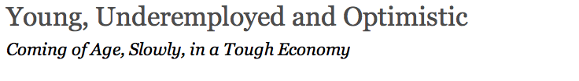
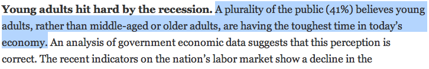
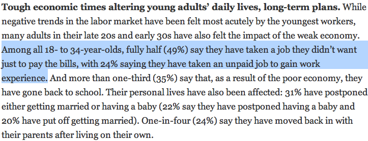
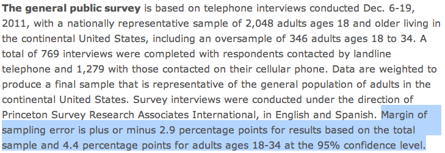
Suppose the proportion of American adults who support the expansion of solar energy is p = 0.88, which is our parameter of interest. Is a randomly selected American adult more or less likely to support the expansion of solar energy?
More likely.
Suppose that you don’t have access to the populaion of all American adults, which is a quite likely scenario. In order to estimate the proportion of American adults who support solar power expansion, you might sample from the population and use your sample proportion as the best guess for the unknown population proportion.
# 1. Create a set of 250 million entries, where 88% of # them are “support” and 12% are “not”. pop_size <- 250000000 possible_entries <- c(rep(“support”, 0.88 * pop_size), rep(“not”, 0.12 * pop_size))
# 2. Sample 1000 entries without replacement. sampled_entries <- sample(possible_entries, size = 1000)
# 3. Compute p-hat: count the number that are “support”, # then divide by # the sample size. sum(sampled sampled_entries == “support”) / 1000
Suppose you were to repeat this process many times and obtain many \(\hat{p}\)s. This distribution is called a sampling distribution.
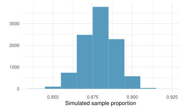
What is the shape and center of this distribution? Based on this distribution, what do you think is the true population proportion?
The distribution is unimodal and roughly symmetric. A reasonable guess for the true population proportion is the center of this distribution, approximately 0.88.
Sample proportions will be nearly normally distributed with mean equal to the population proportion, \(p\), and standard error equal to \(\sqrt{\frac{p~(1-p)}{n}}\). \[\hat{p} \sim N \left( mean = p, SE = \sqrt{\frac{p~(1-p)}{n}} \right)\]
It wasn’t a coincidence that the sampling distribution we saw earlier was symmetric, and centered at the true population population.
We won’t go through a detailed proof of why \(SE = \sqrt{\frac{p~(1-p)}{n}}\), but note that as \(n\) increases \(SE\) decreases.
Certain conditions must be met for the CLT to apply:
Independence: Sampled observations must be independent.
This is difficult to verify, but is more likely if
Sample size: There should be at least 10 expected successes and 10 expected failures in the observed sample.
This is difficult to verify if you don’t know the population proportion (or can’t assume a value for it). In those cases we look for the number of observed successes and failures to be at least 10.
Suppose we have a population where the true population proportion is \(p = 0.05\), and we take random samples of size \(n = 50\) from this population. We calculate the sample proportion in each sample and plot these proportions. Would you expect this distribution to be nearly normal? Why, or why not?
No, the success-failure condition is not met (\(50 * 0.05 = 2.5\)), hence we would not expect the sampling distribution to be nearly normal.
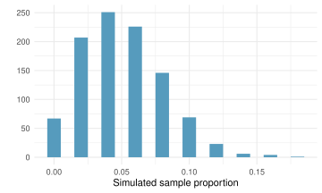
What happens when \(np\) and/or \(n(1-p)\) \(<\) 10?
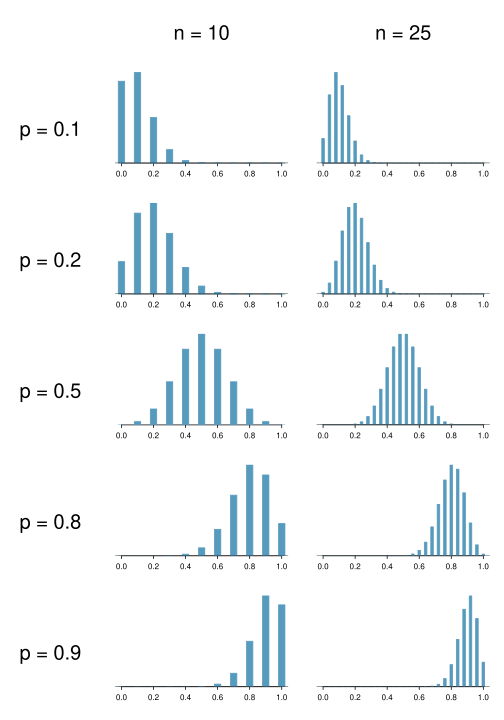
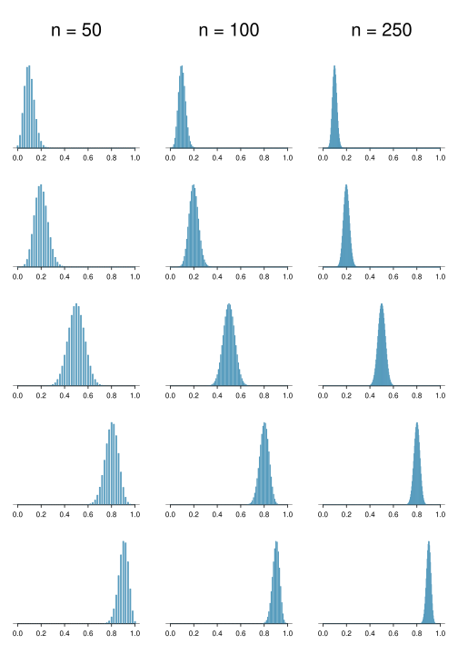
The strategy of using a sample statistic to estimate a parameter is quite common, and it’s a strategy that we can apply to other statistics besides a proportion.
The principles and general ideas are from this chapter apply to other parameters as well, even if the details change a little.
A plausible range of values for the population parameter is called a confidence interval.
Using only a sample statistic to estimate a parameter is like fishing in a murky lake with a spear, and using a confidence interval is like fishing with a net.
We can throw a spear where we saw a fish but we will probably miss. If we toss a net in that area, we have a good chance of catching the fish.
If we report a point estimate, we probably won’t hit the exact population parameter. If we report a range of plausible values we have a good shot at capturing the parameter.
Photos by Mark Fischer (http://www.flickr.com/photos/fischerfotos/7439791462) and Chris Penny (http://www.flickr.com/photos/clearlydived/7029109617) on Flickr.
Most commercial websites (e.g. social media platforms, news outlets, online retailers) collect a data about their users’ behaviors and use these data to deliver tageted content, recommendations, and ads. To understand whether Americans think their lives line up with how the algorithm-driven classification systems categorizes them, Pew Research asked a representative sample of 850 American Facebook users how accurately they feel the list of categories Facebook has listed for them on the page of their supposed interests actually represents them and their interests. 67% of the respondents said that the listed categories were accurate. Estimate the true proportion of American Facebook users who think the Facebook categorizes their interests accurately.
\[\hat{p} = 0.67 \qquad n = 850\]
The approximate 95% confidence interval is defined as \[point~estimate \pm 1.96 \times SE\]
\[SE = \sqrt{\frac{p(1-p)}{n}} = \sqrt{\frac{0.67 \times 0.33}{850}} \approx 0.016\]
\[\begin{eqnarray*} \hat{p} \pm 1.96 \times SE &=& 0.67 \pm 1.96 \times 0.016 \\ &\phantom{=}&\phantom{ (0.67 - 0.03, 0.67 + 0.03)} \\ &\phantom{=}&\phantom{ (0.64, 0.70)} \end{eqnarray*}\]
\[\begin{eqnarray*} \hat{p} \pm 1.96 \times SE &=& 0.67 \pm 1.96 \times 0.016 \\ &=& (0.67 - 0.03, 0.67 + 0.03) \\ &\phantom{=}&\phantom{ (0.64, 0.70)} \end{eqnarray*}\]
\[\begin{eqnarray*} \hat{p} \pm 1.96 \times SE &=& 0.67 \pm 1.96 \times 0.016 \\ &=& (0.67 - 0.03, 0.67 + 0.03) \\ &=& (0.64, 0.70) \end{eqnarray*}\]
Which of the following is the correct interpretation of this confidence interval?
We are 95% confident that
[Participate ⟹ strawpoll.live and use the code 833295]
If we want to be more certain that we capture the population parameter, i.e. increase our confidence level, should we use a wider interval or a smaller interval?
A wider interval.
Can you see any drawbacks to using a wider interval?
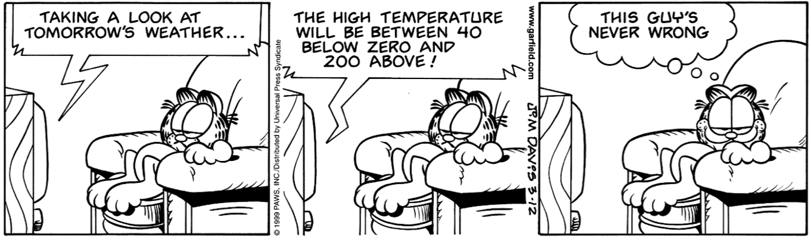
If the interval is too wide it may not be very informative.
Image source: http://web.as.uky.edu/statistics/users/earo227/misc/garfield_weather.gif
\[point~estimate\pm z^\star \times SE\]
Which of the below Z scores is the appropriate \(z^\star\) when calculating a 98% confidence interval?
[Participate ⟹ strawpoll.live and use the code 833295]
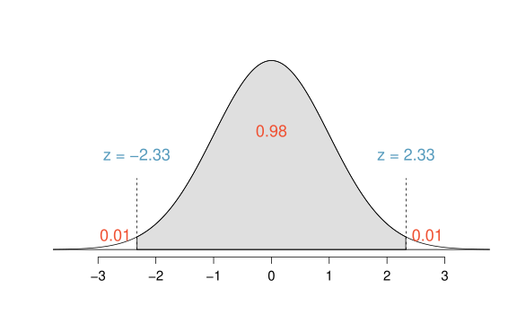
Confidence intervals are …
Gender discrimination experiment:
| Promotion | ||||
| Promoted | Not Promoted | Total | ||
| Gender | Male | 21 | 3 | 24 |
| Female | 14 | 10 | 24 | |
| Total | 35 | 13 | 48 | |
\[\hat{p}_{males} = 21 / 24 \approx 0.88 ~ \text{ and } ~ \hat{p}_{females} = 14 / 24 \approx 0.58\]
Possible explanations:
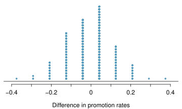
Since it was quite unlikely to obtain results like the actual data or something more extreme in the simulations (male promotions being 30% or more higher than female promotions), we decided to reject the null hypothesis in favor of the alternative.
We’ll formally introduce the hypothesis testing framework using an example on testing a claim about a population mean.
Earlier we calculated a 95% confidence interval for the proporton of American Facebook users who think Facebook categorizes their interests accurately as 64% to 67%. Based on this confidence interval, do the data support the hypothesis that majority of American Facebook users think Facebook categorizes their interests accurately.
The associated hypotheses are:
Null value is not included in the interval \(\rightarrow\) reject the null hypothesis.
This is a quick-and-dirty approach for hypothesis testing, but it doesn’t tell us the likelihood of certain outcomes under the null hypothesis (p-value).
There are two competing hypotheses: the null and the alternative. In a hypothesis test, we make a decision about which might be true, but our choice might be incorrect.
| fail to reject \(H_0\) | reject \(H_0\) | |
|---|---|---|
| \(H_0\) true | \(\checkmark\) | Type 1 Error |
| \(H_A\) true | Type 2 Error | \(\checkmark\) |
If we again think of a hypothesis test as a criminal trial then it makes sense to frame the verdict in terms of the null and alternative hypotheses: \[\begin{align*} H_0&:\text{ Defendant is innocent} \\ H_A&:\text{ Defendant is guilty} \end{align*}\]
Which type of error is being committed in the following circumstances?
Declaring the defendant innocent when they are actually guilty
Type 2 error
Declaring the defendant guilty when they are actually innocent
Type 1 error
Which error do you think is the worse error to make?
“better that ten guilty persons escape than that one innocent suffer”
– William Blackstone
The same survey asked the 850 respondents how comfortable they are with Facebook creating a list of categories for them. 41% of the respondents said they are comfortable. Do these data provide convincing evidence that the proportion of American Facebook users are comfortable with Facebook creating a list of interest categories for them is different than 50%?
The parameter of interest is the proportion of all American Facebook users who are comfortable with Facebook creating categories of interests for them.
There may be two explanations why our sample proportion is lower than 0.50 (minority).
Which of the following is not a condition that needs to be met to proceed with this hypothesis test?
[Participate ⟹ strawpoll.live and use the code 833295]
In order to evaluate if the observed sample mean is unusual for the hypothesized sampling distribution, we determine how many standard errors away from the null it is, which is also called the test statistic.
\[\hat{p} \sim N \left( \mu = 0.50, SE = \sqrt{\frac{0.50 \times 0.50}{850} } \right)\]
\[Z = \frac{0.41 - 0.50}{0.0171} = -5.26\]
The sample proportion is 5.26 standard errors away from the hypothesized value. Is this considered unusually low? That is, is the result statistically significant?
Yes, and we can quantify how unusual it is using a p-value.
p-value: probability of observing data at least as favorable to \(H_A\) as our current data set (a sample proportion lower than 0.41), if in fact \(H_0\) were true (the true population proportion was 0.50).
\[P(\hat{p} < 0.41~\text{ or }~\hat{p} > 0.59~|~p = 0.50) = P(|Z| > 5.26) < 0.0001\]
p-value \(<\) 0.0001
Since p-value is low (lower than 5%) we reject \(H_0\).
The data provide convincing evidence that the proportion of American FB users who are comfortable with FB creating a list of interest categories for them is different than 50%.
The difference between the null value of 0.50 and observed sample proportion of 0.41 is not due to chance or sampling variability.
In two sided hypothesis tests we are interested in whether \(p\) is either above or below some null value \(p_0\): \(H_A: p \ne p_0\).
In one sided hypothesis tests we are interested in \(p\) differing from the null value \(p_0\) in one direction (and not the other):
Two-sided tests are often more appropriate as we often want to detect if the data goes clearly in the opposite direction of our alternative hypothesis as well.
DSK803 · Chapter 5: Foundations for inference